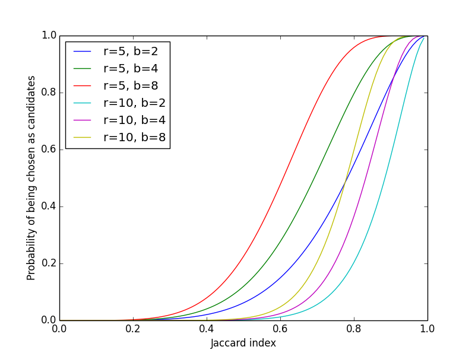

Near-Duplicate Detection using MinHash: Background
There are numerous pieces of duplicate information served by multiple sources on the web. Many news stories that we receive from the media tend to originate from the same source, such as the Associated Press. When such contents are scraped off the web for archiving, a need may arise to categorize documents by their similarity (not in the sense of meaning of the text but the character-level or lexical matching).
Here, we build a prototype for near-duplicate document detection system. This article presents the background material on an algorithm called MinHash and a method for probabilistic dimension reduction through the locality-sensitive hashing. A future article presents their implementation on Python and CouchDB.
(Note that all the numbers generated for the tables in this article are totally made up for illustration purposes; they may not be mathematically consistent with any hashing algorithm.)
Jaccard Similarity Index
A similarity is represented by the Jaccard index:
\[ J(D_i, D_j) = \frac{|D_i \cap D_j|}{|D_i \cup D_j|} \]
where \( D_i \) and \( D_j \) are sets representing the two documents in our context.
Shingling
A useful way to construct a set representing a document is by shingling. To construct a set of \( k \)-singles from a text, a sliding window of \( k \) characters is applied over the text. For example, if the text is “abcdabd,” the resulting set of 2-shingles is {ab, bc, cd, da, bd} (note that “ab” appears only once and not repeated in the set).
The value of \( k \) is arbitrary, but it should be large enough that the probability of any given shingle appearing in any random document is low. That is, if the available number of characters is \( c \) and the character length of typical documents is \( l \), we should at least ensure \( c^k \gg l-k+1 \). Since each character has a different frequency of appearance in a typical text, a suitable value for \( k \) depends on the nature of documents and should be tuned accordingly. A good rule of thumb for an order of magnitude estimate is to assume \( c = 20 \) for English texts.
Instead of using individual characters, shingles can also be constructed from words. For example, in a math text book we may often see a sentence beginning with a terse expression “it is trivial to show,” whose 3-shingle set is {“it is trivial”, “is trivial to”, “trivial to show”}. This has advantage in that shingles built this way are more sensitive to the styles of writing. The style sensitivity may aid in identifying similarities between domain-specific texts buried in other types of documents.
Hashing Shingles
Typically, shingles are all hashed and grouped into buckets represented by integer. The use of integer is a huge advantage in terms of data compression. For example, a 4-shingle (of characters) typically uses 4 bytes, each byte used for a character, and this is good for representing \( 160,000 \) 4-shingles (i.e., \( 20^4 \)). With a 4-byte, however, about 4 million (\( 2^{32} \)) integers and therefore shingles could be represented, which is good enough size for \( k = 7 \) (i.e., \( 20^7 \)). If a tiny probability for collision into the same bucket can be tolerated, \( k \) can be chosen even larger. From here on, we assume a random hash function does not produce any collision between any pair of randomly chosen shingles, i.e., the mapping \( s_i \rightarrow h(s_i) \) yields a unique integer.
Characteristic Matrix
Suppose we have a random hash function \( h(s) \) and all possible singles \( s_1 \), \( s_2 \), \( \dots \), \( s_m \) from \( D_1 \), \( D_2 \), \( \dots \), \( D_l \) for a total of \( l \) documents. We can summarize this in a characteristic matrix:
| \( D_1 \) | \( D_2 \) | \( \dots \) | \( D_l \) | |
|---|---|---|---|---|
| \( h(s_1) \) | 1 | 0 | \( \dots \) | 1 |
| \( h(s_2) \) | 1 | 1 | \( \dots \) | 0 |
| \( \vdots \) | \( \dots \) | \( \dots \) | \( \dots \) | \( \dots \) |
| \( h(s_m) \) | 1 | 1 | \( \dots \) | 0 |
where the entry of 1 indicates that the document \( D_j \) contains a shingle \( s_i \) for which a hash value \( h(s_i) \) exists. (The entry of 0 means the shingle itself does not appear in that document.) It is trivial to compute Jaccard indices using any pair of documents from this matrix. In practice, however, the requirement for comparing all the hash values for a large number of documents makes the process prohibitive.
MinHash as a Jaccard Index Estimator
Let us focus on a pair of documents, \( D_1 \) and \( D_2 \), for which the shingles \( s_1 \), \( s_2 \), \( \dots \), \( s_7 \) have been hashed by a function h. The relevant entries from the characteristic matrix look as follows:
| \( D_1 \) | \( D_2 \) | |
|---|---|---|
| \( h(s_1) \) | 0 | 0 |
| \( h(s_2) \) | 1 | 0 |
| \( h(s_3) \) | 1 | 1 |
| \( h(s_4) \) | 0 | 1 |
| \( h(s_5) \) | 1 | 0 |
| \( h(s_6) \) | 0 | 0 |
| \( h(s_7) \) | 1 | 1 |
There are three types of rows: (a) both columns have 1, (b) one of the columns has 1, and (c) both columns have 0. We let \( X \), \( Y \), and \( Z \) denote the numbers of rows categorized this way, respectively. For \( D_1 = \left\{h(s_2), h(s_3), h(s_5), h(s_7)\right\} \) and \( D_2 = \left\{h(s_3), h(s_4), h(s_7)\right\} \), \( X \) is the cardinality of their joint set and \( Y \) is that for their union. Hence the Jaccard index is \( X / (X + Y) = 2/5 = 0.4 \).
Now, consider an experiment in which the rows in the matrix are randomly permutated. Remove the rows of type (c), since they do not contribute at all to the union of two sets. We look at the first row of the matrix thus constructed and note its type defined above, either (a) or (b). Repeat the process n times. What is the chance that the first row found this way to be of type (a) above? The probability is given by \( X / (X + Y) \), which is similar to the way Jaccard index is computed. This is the property that we use as a Jaccard index estimator.
In practice, randomly permuting a huge number of rows is very inefficient. Instead, we prepare a set of random hash functions \( h_i(s) \) (for \( i = \left\{1, 2, \dots, n\right\} \) for a set of n measurements) that effectively permute the row order given the same set of shingles and sort rows in ascending order by hash values. (In order for this to be true, the hash functions need to be well-chosen and produce few collisions.) The row of the minimum hash value corresponds to picking the first row in the example above.
What we have shown is that, for estimating Jaccard indices, we only need to keep the minimum hash values generated from n different hash functions. Therefore the very sparse characteristic matrix can be condensed into a signature matrix of minimum hash values with entries given by
\[ h_i \equiv \min \left\{h_i(s_1), h_i(s_2), \dots, h_i(s_m)\right\} \ , \]
where
\[ D_j = \left\{ s_1, s_2, \dots, s_m \right\} \]
is the set of shingles from the document \( D_j \).
| \( D_1 \) | \( \dots \) | \( D_j \) | \( D_{j + 1} \) | \( \dots \) | \( D_l \) | |
|---|---|---|---|---|---|---|
| \( h_1 \) | 98273 | \( \dots \) | 23 | 23 | \( \dots \) | 63483 |
| \( h_2 \) | 2763 | \( \dots \) | 524 | 524 | \( \dots \) | 2345 |
| \( \vdots \) | \( \vdots \) | \( \dots \) | \( \vdots \) | \( \vdots \) | \( \dots \) | \( \vdots \) |
| \( h_{n - 1} \) | 325 | \( \dots \) | 567849 | 567849 | \( \dots \) | 987 |
| \( h_n \) | 876 | \( \dots \) | 7849 | 32 | \( \dots \) | 897347 |
For supposedly near-duplicate documents such as \( D_j \) and \( D_{j+1} \) in the table, most MinHash values are similar, and the fraction of values that are similar is an estimate of the Jaccard index. This is the gist of the MinHash algorithm. In other words, the probability \( p \) that a pair of MinHash values from two documents \( D_i \) and \( D_j \) match is equivalent to their Jaccard index:
\begin{equation} p = J(D_i, D_j) \ . \label{eq:equality} \end{equation}
Locality-Sensitive Hashing
While the information necessary to compute document similarity have been compressed quite nicely into a signature matrix, examining all documents would take \( l(l-1)/2 \) pairs, each involving n comparisons from signature entries. The vast majority of documents may not be near-duplicate, however, and in such a case we do not need every pair to be compared. Locality-sensitive hashing (LSH) offers a method of reducing the number of dimensions in high-dimensional MinHash signatures.
The idea is to partition a MinHash signature matrix into b bands, each with \( r \) rows (such that \( n = b r \) is the total number of rows), and hashing MinHash integer sequences grouped by band. For example, if we have \( n = 12 \) MinHash values, we could partition them into \( b = 3 \) bands of \( r = 4 \) rows:
| Band | \( D_1 \) | \( \dots \) | \( D_j \) | \( D_{j + 1} \) | \( \dots \) | \( D_l \) | |
|---|---|---|---|---|---|---|---|
| 1 | \( h_1 \) | 98273 | \( \dots \) | 23 | 23 | \( \dots \) | 63483 |
| 1 | \( h_2 \) | 2763 | \( \dots \) | 524 | 524 | \( \dots \) | 2345 |
| 1 | \( h_3 \) | 49368 | \( \dots \) | 7207 | 7207 | \( \dots \) | 59542 |
| 1 | \( h_4 \) | 9559 | \( \dots \) | 34784 | 34784 | \( \dots \) | 6095 |
| 2 | \( h_5 \) | 37153 | \( \dots \) | 14927 | 14927 | \( \dots \) | 581 |
| 2 | \( h_6 \) | 8671 | \( \dots \) | 17492 | 17492 | \( \dots \) | 6664 |
| 2 | \( h_7 \) | 2763 | \( \dots \) | 43306 | 43306 | \( \dots \) | 10916 |
| 2 | \( h_8 \) | 2600 | \( \dots \) | 38712 | 38712 | \( \dots \) | 45472 |
| 3 | \( h_9 \) | 14352 | \( \dots \) | 25862 | 25862 | \( \dots \) | 14812 |
| 3 | \( h_{10} \) | 263 | \( \dots \) | 52 | 52 | \( \dots \) | 11973 |
| 3 | \( h_{11} \) | 325 | \( \dots \) | 567849 | 567849 | \( \dots \) | 987 |
| 3 | \( h_{12} \) | 876 | \( \dots \) | 7849 | 32 | \( \dots \) | 897347 |
Then we use some good hash function \( H \) which takes \( r \) MinHash values and summarizes into integers, \( H(h_1, h_2, h_3, h_4) \equiv H_1 \) for band 1, \( H(h_5, h_6, h_7, h_8) \equiv H_2 \) for band 2, and so on. This reduces the \( n \times l \) signature matrix into \( b \times l \) matrix:
| \( D_1 \) | \( \dots \) | \( D_j \) | \( D_{ j + 1 } \) | \( \dots \) | \( D_l \) | |
|---|---|---|---|---|---|---|
| \( H_1 \) | 390 | \( \dots \) | 57232 | 57232 | \( \dots \) | 33719 |
| \( H_2 \) | 62509 | \( \dots \) | 453 | 453 | \( \dots \) | 51954 |
| \( H_3 \) | 453 | \( \dots \) | 13009 | 23905 | \( \dots \) | 12174 |
Near-duplicate documents will be hashed into the same bucket within each band. In this example, \( D_j \) and \( D_{j+1} \) are in the same bucket for bands 1 and 2. (Note that \( D_1 \) in band 3 has the same hash value as \( D_j \) and \( D_{j+1} \) in band 2, but they are not considered to be in the same bucket since the bands are different.) The documents that share a bucket within a band is considered candidates for further examination. The advantage is that, since \( b \ll n \) in general, the number of required comparisons is much smaller. The LSH thus provides a way to select out candidates for near-duplicate detection, before full signature comparisons are carried out.
The assumption is that a pair of documents, if near-duplicate, has a total of b chances to be hashed into a common bucket in at least one of the available bands. Recall from Eq.~\eqref{eq:equality} that the probability that a pair of MinHash values from two documents match is equivalent to their Jaccard index. The probability that a pair of documents share a bucket in a band of \( r \) rows is given by \( p^r \). Its complement, \( 1 - p^r \), is the probability that a document pair does not get hashed into the same bucket for a band. Then the probability that two documents become candidates in at least one band is given by \( 1 - (1 - p^r)^b \). Plotting for varying \( b \) and \( r \), the function forms a series of S-curves:

The figure provides an intuition as to how the value of \( b \) and \( r \) should be chosen for a target Jaccard similarity threshold \( t \) (above which two documents are considered near-duplicate). Let \( f(p) = 1 - (1-p^r)^b \). The value of \( p \) for the steepest slope is obtained from the second derivative, \( d^2f/dp^2 |_{p=p_t} = 0 \), which is
\[ p_t = \left(\frac{r-1}{br-1}\right)^{1/r} \approx \left(\frac{1}{b}\right)^{1/r} \]
for \( b \), \( r \gg 1 \). As a rule of thumb, we want \( p_t \approx t \), but the exact value of \( p_t \) can be adjusted based on rejection criteria. Choosing \( p_t > t \) reduces false positives, whereas \( p_t < t \) reduces false negatives at the candidate selection step.
References
- Anand Rajaraman and Jeffrey David Ullman (2011). Mining of Massive Datasets. Cambridge University Press. ISBN 978-1-107-01535-7